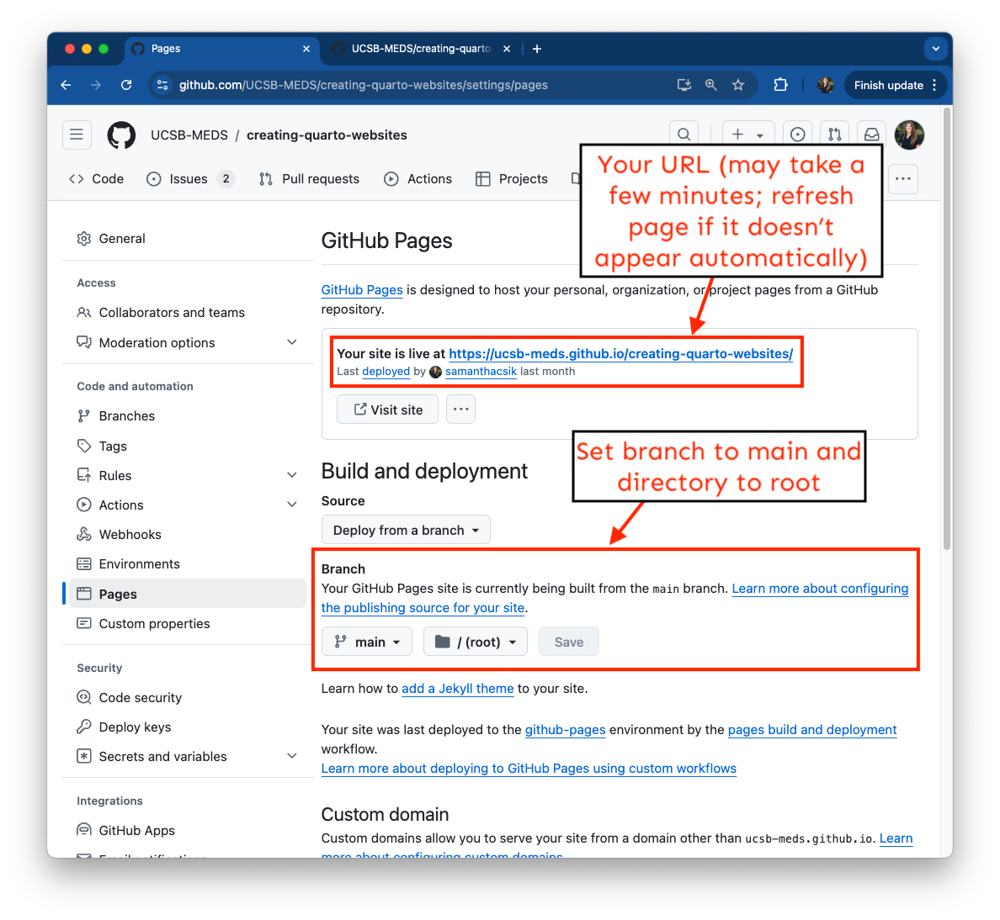

EDS 296: Data Science Portfolios
GitHub Tools
November 8th, 2024
Demonstrate by doing
GitHub provides many cool project management features that facilitate organization, collaboration, coding, and building workflows. By using these tools (while working solo and while working with others), you can demonstrate your technical and programming proficiencies.
Art by Allison Horst
Track ideas & TODOs using GitHub issues
Add a new issue from a repo’s Issues tab
“GitHub Issues are items you can create in a repository to plan, discuss and track work. Issues are simple to create and flexible to suit a variety of scenarios. You can use issues to track work, give or receive feedback, collaborate on ideas or tasks, and efficiently communicate with others.”
A few helpful features:
- create task lists & convert individual tasks to issues
- attach files
- add permalinks
- add labels
- assign users
- reference issues in other issues, commits, PRs
- configure issue templates
Learn more by exploring GitHub Docs
Explore some real issues on the very real ggplot2 repository
When should I use issues?
Issues are a useful and valuable tool for tracking TODOs, jotting down ideas, recording bugs, etc., regardless of whether you’re working alone or with collaborators.
Like most things, it’s great to put some care and thought into writing an issue (especially when collaborating or contributing thoughts to a public project e.g. ggplot2). . .
. . . but I’d also argue that a hasty issue on a personal project can still go a long way in helping you remember a helpful resource, or that idea that popped into your mind at a time you couldn’t devote much attention to it.
Organize and prioritize issues (and pull requests) using GitHub projects
Create a project from your profile’s Projects tab
“Projects are an adaptable collection of items that stay up-to-date with GitHub data. Your projects can track issues, pull requests, and ideas that you note down. You can add custom fields and create views for specific purposes.”
A few helpful features:
- add issues or pull requests (from multiple repos) to the same project
- change and / or customize your project layout (you may also add multiple views)
- link projects to relevant repositories
- manage access (for organization-level projects)
Learn more by exploring GitHub Docs
An example project for my personal projects.
When should I use projects?
If you use issues, projects may offer an additional helpful way to organize your tasks.
Code is oftentimes spread across multiple repositories (capstones & GPs are an excellent examples of this!) – projects can be particularly helpful for tracking TODOs and progress across them.
Projects are not required – you can decide if they are a helpful tool for you / your team.
Collaborate with teams across shared projects using GitHub organizations
Create an organization from your GitHub profile
“Organizations are shared accounts where businesses and open-source projects can collaborate across many projects at once, with sophisticated security and administrative features.”
Click on the Create new (“+”) button or by clicking on your profile image (top right corner) > Your organizations > New organization. Choose the “free” option.
A few helpful features:
- invite users
- assign roles
- create and add members to teams
- customize your org’s profile (revisit the README guidelines for info on organization READMES)
Learn more by exploring GitHub Docs. Also note the importance of assigning multiple organization owners.
The NCEAS Organization is home to over 100 repositories, and many members, teams, and projects
When should I use organizations?
TODO
- branding
https://github.com/orgs/community/discussions/69020
Host reports, documents, websites, etc. with GitHub Pages
GitHub Pages can be enabled for any repo
You can host one website or rendered HTML document from any public GitHub repository.
Hosting additional websites via GHP:
- same process as hosting your personal website (see week 0 materials)
- NOTE: you’re only allowed one user website with the
github.iosuffix, e.g.<username>.github.io– all other URLs will be structured as<username>.github.io/<repoName>)
- NOTE: you’re only allowed one user website with the
Hosting a rendered HTML document via GHP:
- e.g. Quarto doc, Quarto presentation, Quarto manuscript…etc.
- rendered file must be named
index.htmland live in your repo’s root directory; no other configurations necessary - deploy from Settings > Pages > set branch to main and directory to root
- re-render
index.html, then push to GitHub to update deployment

The materials for creating your personal website using Quarto (above) is one example of a published document. Similarly, the slides for customizing your Quarto website are also published using GitHub Pages.
When should I use GitHub Pages?
You can use GitHub Pages to host projects and resources that you want to share publicly with others (e.g. colleagues, clients, potential employers, etc.).
GitHub Pages can be enabled from any public repo owned by a personal profile or organization.
Consider hosting instructional documentation, software user guides, reports, project websites, etc.
Automate workflows with GitHub Actions
What are GitHub Actions?
From GitHub Docs:
GitHub Actions (GHA) is a continuous integration and continuous delivery (CI/CD) platform that allows you to automate your build, test, and deployment pipeline.
You can use GHA to automate pretty much anything (truly)! But some concrete examples:
- building and deploying a GitHub Pages site whenever changes are pushed or merged into
main(what we’ll be doing today) - adding appropriate labels whenever someone creates a new issue in your repo
- runing tests whenever code is pushed to a repo to ensure new changes don’t break existing code
- running data analysis pipelines whenever new data is pushed to the repo
- running linters to ensure code adheres to a particular style guide
Some definitions

- workflow: a configurable automated process that will run one or more jobs, which are defined by a YAML file in your repo (e.g. automatically build and redeploy a GitHub Pages site)
- event: a specific activity in a repo that triggers a workflow run (e.g. pushing modified files to GitHub)
- job: a set of steps in a workflow that is executed on the same runner; steps are executed in order (e.g. check out repo, install Quarto, install R + dependencies, render & publish Quarto project)
- runner: a server that runs your workflows when they’re triggered
Read more on GitHub Docs
Get started with a workflow template
Rather than starting from a blank slate, you can use as-is or adapt pre-made workflow templates to create your desired GitHub Actions workflow.
The next few slides walk through setting up a *GitHub Action you can use to automate the building and deployment of your Quarto website. We’ll use a workflow template provided in the Quarto documentation.
We’ll follow these general steps:
- Set up a virtual environment for our project
- Create a
gh-pagesbranch, where our rendered website files will be stored - Add a GHA workflow to our repository
- Reconfigure GitHub Pages to serve our website from our
gh-pagesbranch
IMPORTANT: The following instructions assume you’ve only included R code in your Quarto website. If you have content (e.g. blog posts) that include Python code, you’ll need to modify our chosen workflow.
1. Set up a virtual environment
When should I use GHA?
need to use {renv} package
Use
renv::init()to initialize renv in a new or existing project. This will set up a project library, containing all the packages you’re currently using. The packages (and all the metadata needed to reinstall them) are recorded into a lockfile, renv.lock, and a .Rprofile ensures that the library is used every time you open that project.As you continue to work on your project, you will install and upgrade packages, either using install.packages() and update.packages or renv::install() and renv::update(). After you’ve confirmed your code works as expected, use renv::snapshot() to record the packages and their sources in the lockfile.
Later, if you need to share your code with someone else or run your code on new machine, your collaborator (or you) can call renv::restore() to reinstall the specific package versions recorded in the lockfile.
install
{renv}run
renv::init()say Y when it asks if you want to proceed
install
{yaml}if prompted (Warning: The 'yaml' package is required to parse dependencies within Quarto Markdown files)go to github repo
click on branch dropdown > View all branches > New Branch > in the New branch name field, type
gh-pages> click Create new branchreturn to RStudio
using Terminal or New folder button, add a folder named
.githubin your root directoryinside
.github/create another folder calledworkflowsinside
workflows/add a file (using Terminal or New File > Text file) namedpublish.ymlcopy content from https://quarto.org/docs/publishing/github-pages.html#example-knitr-with-renv into
publish.ymlremove line in
_quarto.yml(output-dir: docs)delete
docs/folderadd commit push to github
return to github
(you will probably get an email saying [yourUserName/yourSiteName] pages build and deployment workflow run)
go to Settings > Pages > switch branch from
maintogh-pagesand from/docsto/(root)> click Save > check out Actions tab while your site redeploys